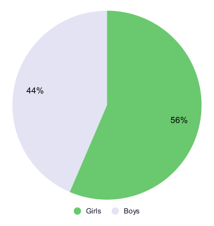
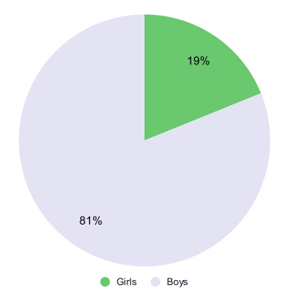

Girls in High School age
It’s important to get girls interested in STEM in early ages. A better understanding of what it is will help prevent perceptions like it’s too difficult or it’s overly complicated. To be able to get into an engineering program in Sweden, or another program within STEM, at College you need to attend a program at High School that covers the required subjects. For example you will need chemistry, physics and math at specific levels. (But no stress. If you choose another program and before College change your mind, many Colleges offer an Engineering preparatory year. But it will add a year.) This is why it’s interesting to look at applicants and admissions to High School programs like Natural Science and Technology based on gender. It can give us an indication of girls' interest in STEM at that age.
Applicants to High School
To the school year of 2020/2021 16,700 students applied for the Natural Science program as their first choice and 11,500 applied for the Technology program as their first choice. Below you can see how the applications were divided between girls and boys.
Natural Science program, per gender
(school year 2020/21)

Technology program, per gender
(school year 2020/21)

Source: Swedish National Agency for Education
Admitted to High School
Unfortunately all students that apply will not get accepted. Around 75 percent of the applicants get accepted. The number for girls is slightly higher than the number for boys. Taking this into consideration we can now look at students admitted to the Natural Science program and the Technology program the school year of 2020/2021. Below you can see how the admissions were divided between girls and boys.
Comment
A majority of the students attending the Natural Science program are girls and a vast majority of the students attending the Technology program are boys. The Natural Science program is more common than the Technology program in Sweden. You could think that this would lead to a balanced gender mix at STEM programs at College. But unfortunately so is not the case at the moment. Please have a look at the data visualization for College and University to learn more.